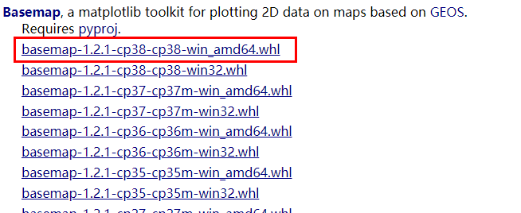
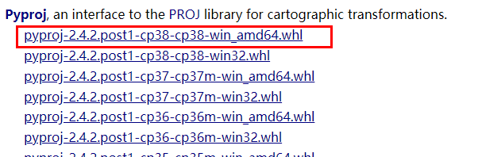
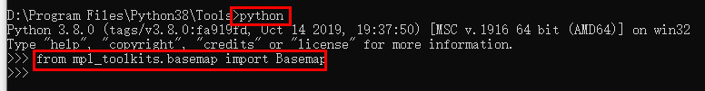
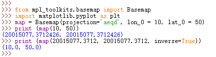

Basemap手册——第二章进阶（一）学习绘制疫请地图
0x01 前言
大约在n年前（n>=2）,大约也是在这样的一个冬季，我倚着暖气，喝着红茶，码着键盘，在Base Map魅力下，在世界地图上遨游。窗外的雪花纷纷扬扬，压在枯枝上，盖在松柏顶，世界一片洁白纯净。大街上零零星星有三两个行人，让空旷的街道更显得静谧却不失安详。
今天的街上也是这样，零零星星的三两个行人。行色匆匆，淡蓝色的口罩难掩神情的恐慌。没有大雪封路，没有冬风凛冽，即使天空蔚蓝，阳光明媚，也难免让人感到一丝萧瑟。
随着疫情的蔓延，疫情地图开始在各个媒体平台出现，它极大的方便了人们对疫情实时动态的了解。我也想到了两年前发的这篇博文【译】Basemap手册——第一章 入门（始于颜值），之前一直没有在意，今天翻翻这篇博文，看到一些留言等，我打算继续翻译第二篇，顺带做一个自己的疫情地图，这就是技术宅的宅生活吧！
武汉加油，中国加油
0x02 环境配置
有评论反映部分文件下载不了，安装之后报错，刚好我这个电脑上没有安装Basemap，我就重新安装一下下。我依然参照了神农尝百草—Windows环境下为Python3.X安装basemap的文章内容，按照左后一种安装方法，再次对博主moxigandashu表示感谢。如果安装不成功，可以参照官方文档Installing ，谨记谨记，有问题，看文档，看官方文档，才是正解！网上大多数博客都属于东拼西凑，包括我这篇文章也是，限于我的能力，错误疏漏在所难免，所以在学习技术的时候，多看官方文档才是提高技术的根本之道！
- 确定python版本
我的版本是python 3.8.0 64位
-
下载pyproj和basemap
在https://www.lfd.uci.edu/~gohlke/pythonlibs/ 下载
basemap‑1.2.1‑cp38‑cp38‑win_amd64.whl文件比较大，可能要多等几分钟。

pyproj‑2.4.2.post1‑cp38‑cp38‑win_amd64.whl

实测这些文件都是可以正常下载的。
-
打开cmd，进入所下载的文件的目录
-
安装pyproj和basemap
pip install basemap‑1.2.1‑cp38‑cp38‑win_amd64.whlpip install pyproj‑2.4.2.post1‑cp38‑cp38‑win_amd64.whl -
测试安装结果
from mpl_toolkits.basemap import Basemap

0x03下面开始正式翻译
原文地址可查看basemaptutorial
Basemap
所有用Basemap库创建的地图，在创建之前都需要创建一个Basemap实例：
mpl_toolkits.basemap.Basemap(llcrnrlon=None, llcrnrlat=None, urcrnrlon=None, urcrnrlat=None, llcrnrx=None, llcrnry=None, urcrnrx=None, urcrnry=None, width=None, height=None, projection=’cyl’, resolution=’c’, area_thresh=None, rsphere=6370997.0, ellps=None, lat_ts=None, lat_1=None, lat_2=None, lat_0=None, lon_0=None, lon_1=None, lon_2=None, o_lon_p=None, o_lat_p=None, k_0=None, no_rot=False, suppress_ticks=True, satellite_height=35786000, boundinglat=None, fix_aspect=True, anchor=’C’, celestial=False, round=False, epsg=None, ax=None)
这个构造函数里面包含好多个可选的参数，它们的用法如下：
- resolution：海岸线、湖泊等的分辨率，可选的值包括c（crude，分辨率最低，默认的值）、l（low，低）、i（intermediate、中等）、h（high，高）、f（full，最高），或者None。 如果使用Shapefile替代默认的地图文件，那么最好把这个参数的值设置为None，这样减少不必要的数据加载，提高运行效率。
- area_thresh：和上面分辨率相关的临界值，10000，1000，100，10，1分别对应c，l，i，h，f。
- rsphere：指定地图投影中的半径，默认的是6370997
- ellps：参考坐标系的名称，例如’WGS84‘，这些值在pyproj.pj_ellps中定义。
- suppress_ticks：不在地图坐标轴上显示刻度和标签。
- fix_aspect：修正方向斜率，默认为true。
- anchor：锚点，指定地图的位置，默认为C，居中。可选的值包括：C、SW、S、SE、E、NE、N、NW和W。
- celestial：按天文学的惯例使用经度，例如负的经度表示0度以东。默认False，意味着resolution=None。
- ax：设置默认的坐标轴。
Passing the bounding box
下面的参数用来设定地图的范围。 第一种方法是通过设置地理坐标经纬度来设置地图的范围：
| 参数 | 描述 |
|---|---|
| llcrnrlon | 左下角的经度 |
| llcrnrlat | 左下角的纬度 |
| urcrnrlon | 右上角的经度 |
| urcrnrlat | 右上角的纬度 |
第二种方法是用投影单位来设置：
| 参数 | 描述 |
|---|---|
| lcrnrx | 左下角的x轴坐标 |
| llcrnry | 左下角的y轴坐标 |
| urcrnrx | 右上角的x轴坐标 |
| urcrnry | 右上角的y轴坐标 |
第三种方法是综合经纬度和投影单位设置：
| 参数 | 描述 |
|---|---|
| width | 宽度 |
| height | 高度 |
| lon_0 | 地图中心的经度 |
| lat_0 | 地图中心的纬度 |
利用Basemap进行坐标转换
可以用Basemap计算地图上的点，并且进行坐标值和经纬度的转换。
from mpl_toolkits.basemap import Basemap
import matplotlib.pyplot as plt
map = Basemap(projection='aeqd', lon_0 = 10, lat_0 = 50)
print (map(10, 50))
# print (map(10, 50, inverse=False))
print (map(20015077.3712, 20015077.3712, inverse=True))
输出的结果如下所示：

inverse参数可以不写，这时候默认是inverse=False，表示把坐标值转换为经纬度，反之，则是把经纬度转换成坐标值